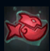
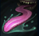
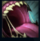
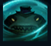
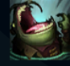

Tahm Kench
| Tahm Kench The River King | |
|---|---|
| Release date | 09.07.2015 |
| Class | Marksman |
| Positions | Support |
| Resource | Mana |
| Range type | Melee |
| Adaptive type | Magic |
| Base statistics | |||
| Health | 600 – 2300 | Mana | 325-1005 |
| Health regen. | 6.5 – 15.85 |
Mana regen. | 8 - 25 |
| Armor | 47 – 106.5 | Attack damage | 56 – 110.4 |
| Magic resist. | 32 – 53.25 | Crit. damage | 175% |
| Move. speed | 335 | Attack range | 175 |
Cunoscut sub multe nume de-a lungul istoriei, demonul Tahm Kench străbate canalele Runeterrei, hrănindu-și apetitul insațiabil cu suferința celorlalți. Deși poate părea deosebit de șarmant și plin de el, rătăcește prin tărâmul fizic ca un vagabond în căutarea unei victime fără apărare. Cu limba lui enormă, poate ameți un războinic îmbrăcat în armură de la zece pași, iar burdihanul lui e un abis din care e aproape imposibil să te mai întorci. |  |
GUST DOBÂNDIT La fiecare atac sau abilitate, Tahm Kench se folosește de greutatea corpului său masiv pentru a provoca daune suplimentare în funcție de viața sa totală. Când îi provoacă daune unui campion inamic, îi aplică cumuluri de ''Gust dobândit''. La trei cumuluri, îl poate ''Devora''. |
||
|---|---|---|---|---|
 |
LIMBĂ LACOMĂ Tahm Kench își proiectează limba, provocându-i daune primei unități lovite și încetinind-o. Această abilitate va ameți ținta după, dacă aceasta are trei cumuluri de ''Gust dobândit''. |
|||
 |
DEVORARE Tahm Kench devorează o țintă, scăzându-i un procent din viața maximă sub formă de daune magice. Poate scuipa minionii și monștrii pe care-i devorează (lovitură de îndemânare), provocând daune magice la impact, într-o zonă AoE. |
|||
|  |
OBRAZ GROS Tahm Kench transformă daunele primite în viață cenușie. Când viața cenușie scade, Tahm Kench se vindecă cu un procent din totalul ei. Atunci când este activată, abilitatea transformă toată viața cenușie într-un scut. |
|||
 |
SEJUR ABISAL Tahm Kench se poate teleporta pe hartă împreună cu un aliat (dacă acesta dorește). |